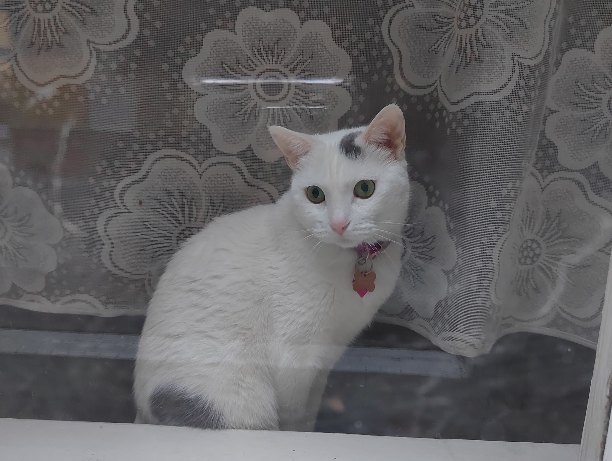
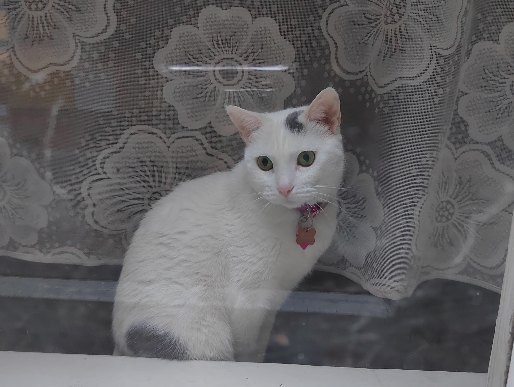

Kuki
I am going to talk to you about me and my family:
My mom, BoGi:
My mom is BoGi, she is a Catniplord and she owns a dark-web-catnip shop. She had 4 children but Neko, my brother, passed away when he was just a baby. This situation made my momchange the way she saw life and she started to enjoy more time with us. I still hate when she wants to tongue-bath us but she forces us because that reminds her of when we were less than a month old. She also own 2 hoomans that work very hard to give us everything, I hope they continue like that because, otherwise, she would have to replace them. They have been with mom for more than 4 years now and sometimes she miss them when they are out for work because she says it's only because she likes the way they clean our sandbox.

My sister, Suri:
 

My sister always says that we aren't her real family, because she was born in a trillionaire family, not in our poor family. She says she deserves the best water in the world and that it's very exhausting to always try to teach our 2 slaves how to correctly comb her hair without success. She says that someday her real family will find her and will take her to their beautiful place where she will have many slaves at her disposition and who would always bring her water every time she asks them. She says she is sick and tired of our 2 slaves because they never work for her, and recently they have installed a bucket to collect water and they pretend that she auto serves herself. I love my syster, she is the best!
My brither, Mao:
My brother Mao was born to rock! Everybody loves him because he is very cute, mommy always says that he is a handsome cat and he is the only one who can make our hoomans wake up at 2 am in the morning. We don't understand why mommy lets them sleep for so many hours, but Mao always tell her it makes them so useless, and then he goes to wake them up every morning at the same exact time, 2 am. He is always searching for new adventures, and I always find new places to hide and scare my slaves because they know that if I disappear, mommy would ask one of her guys to take them out.
Me, Kuki:

I love my family and my 2 slaves, they are always there for me when I want them to rub my belly. Sometimes the female hooman plays music because, in a very strange way, she was able to understand my singing once and, of course, she liked my Catenor voice. That day I was very surprised that a hooman was able to appreciate Cat opera. She is pretty nice to play music for me to sing and I do enjoy it a lot when I sing for them because it gives me a feeling that I am doing something good for this inferior race. Who wouldn't say that if cats didn't exist, they would become a smart species and takeover the world?